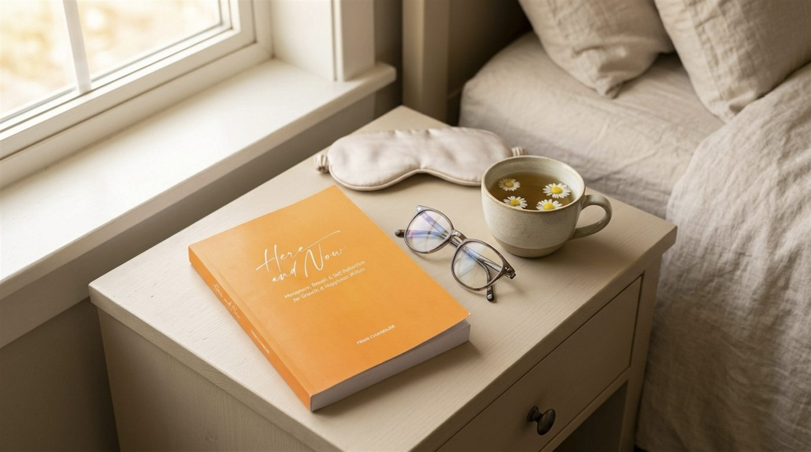
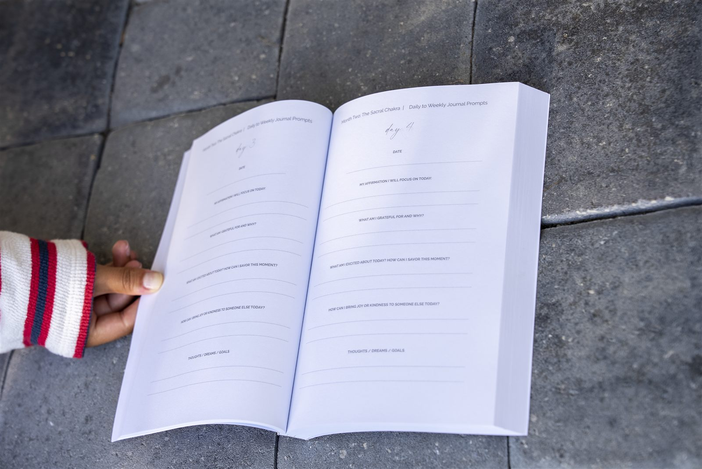
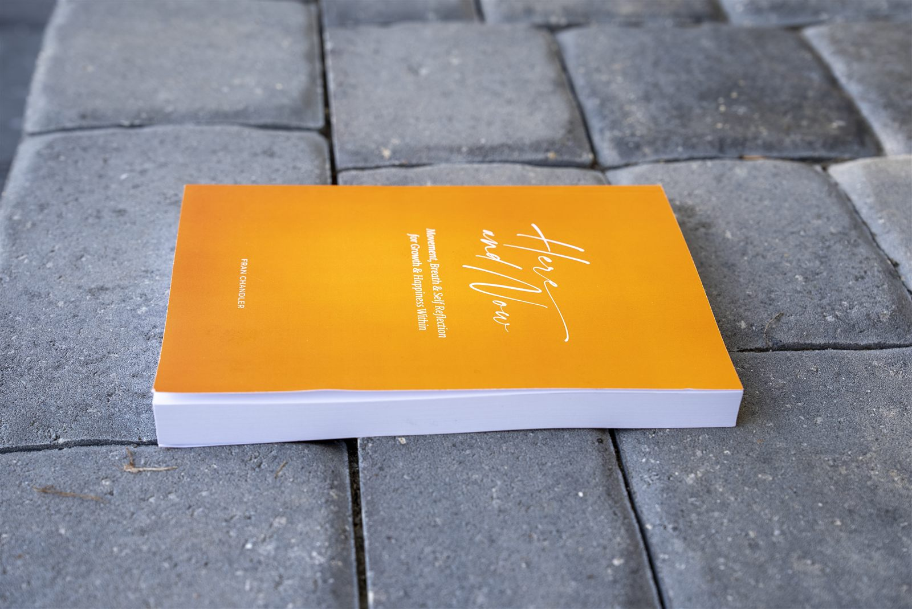
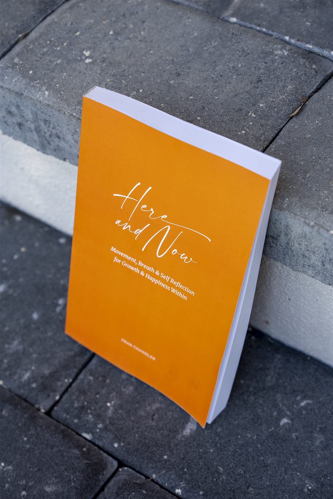
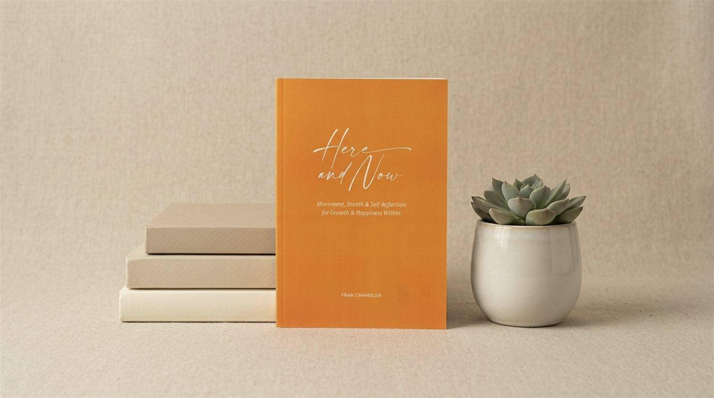
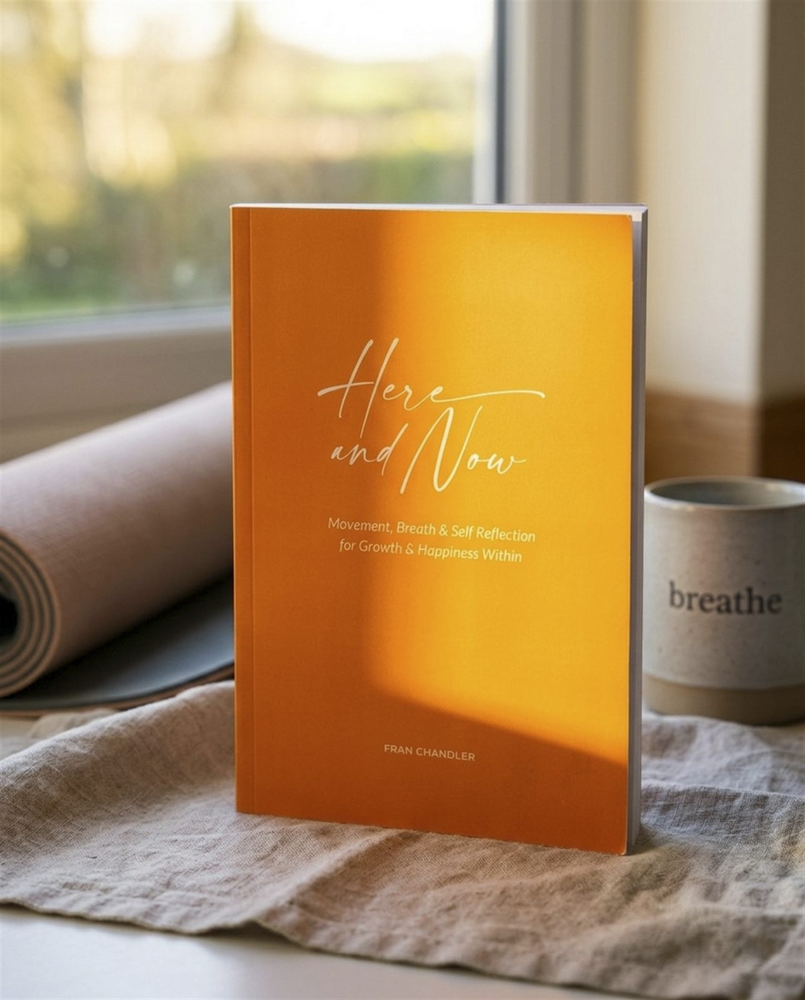

A guided journal
Right here.
Right now.
That's enough.
Here and Now is a seven-month journey through movement, breath, and honest writing — one chakra, one month, one page at a time.
$19.91 · 304 pages · available on Amazon



The method
Seven chakras. Seven months.
Each month, the journal moves through one energy center using three tools together — movement, meditation, and journaling. Slow on purpose.
Month 1
Root chakra
We start at the ground beneath you — safety, stability, and the quiet work of feeling steady in your own body.
Month 2
Sacral chakra
Here, the focus shifts to creativity and feeling — making room for pleasure, emotion, and a little more flow.
Month 3
Solar plexus chakra
This month is about personal power — the kind of confidence that doesn't need to perform for anyone.
Month 4
Heart chakra
A season for opening — toward love, connection, and compassion, starting with yourself.
Month 5
Throat chakra
Finding your voice — saying what's true, even when it comes out quieter than you expected.
Month 6
Third eye chakra
Turning inward — toward intuition, insight, and the kind of seeing that doesn't rely on your eyes.
Month 7
Crown chakra
The month of stepping back — spiritual connection, wider awareness, and a sense of belonging to something larger.
A closer look
What it actually looks like
Real photos of the physical journal — the cover, the spine, and a few pages along the way.





From readers
What people are finding
"I almost skipped the Root Chakra month because it felt too simple. Turns out that was the point — I still go back to those first pages when things feel unsteady."Amazon reader
"By month three I noticed I'd stopped apologizing before I asked for what I needed. Small thing. Didn't expect a journal to do that."Amazon reader
"I'm not a journaling person. The prompts are short enough that I actually finish them, which is new for me."Amazon reader
"Did the Throat Chakra month during a really quiet stretch at work. Helped me say two things out loud I'd been sitting on for months."Amazon reader